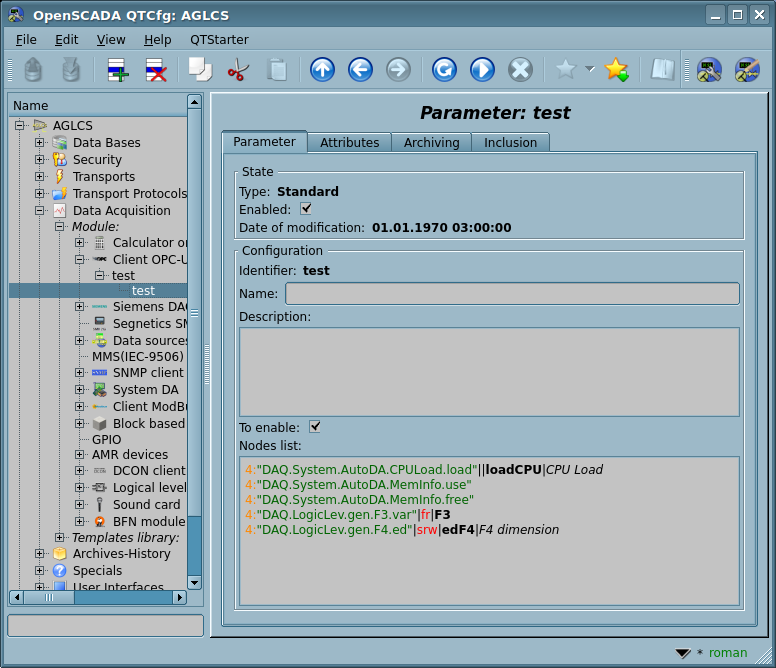

| Module |
Name |
Version |
License |
Source |
Languages |
Platforms |
Type |
Author
|
| OPC_UA |
Client OPC-UA
|
2.5 |
GPL2 |
daq_OPC_UA.so |
en,uk,ru,de |
x86,x86_64,ARM
|
DAQ |
Roman Savochenko
Maxim Lysenko (2010) — the page initial translation
|
| Description
|
| Provides OPC-UA client service implementation.
|
| OPC_UA |
Server OPC-UA
|
2.1 |
GPL2 |
daq_OPC_UA.so |
en,uk,ru,de |
x86,x86_64,ARM
|
Protocol |
Roman Savochenko
Maxim Lysenko (2010) — the page initial translation
|
| Description
|
| Provides OPC-UA server service implementation.
|
| OPC_UA |
Library of implementing OPC-UA into OpenSCADA
|
2.1 |
LGPL3 |
libOPC_UA.{h,cpp} |
en |
x86,x86_64,ARM
|
Library |
Roman Savochenko
|
| Description
|
Provides the protocol OPC-UA implementing into parts of client and server, as a separated library.
- Total complexity: > 50 HD[!]
- Sponsored by, for 2 years TS on 13 HD[!]: Likov Dmitry, Vector LTD
- Sponsored by, for moving the protocol code to a LGPL library, significant improvement and documenting, on 8.4 HD[!]: Oleksander Leuta, MYSCADA
- Sponsored by, for working with UAExpert 1.4 and kepware on 0.9 HD[!]: Ustijancev Michael
- Sponsored by, for working with UAExpert 1.5, Client's Publish and Chunks implementing, significant refactoring, the Logical Level type support and the document complete revision on 10.4 HD[!]: Fund
- A task of the module extending
- To Do:
- + revise the representing documentation page;
- - resolve the controversy in Client::messIO() about mixing the pure requesting mode with the free read/write mode and the time of waiting responses here without passing the connection timeout directly;
- + append the builtin Logical Mode of the DAQ-Parameters;
- - append the authentication support for the input-server protocol part;
- - append the automatic creation for input transports and their pre-configuration from the EndPoint object properties;
- + implement the request-service "Publish" and chunks into the client part;
- - observe deeply the Publish service for the packages loss and the Republish request sending;
- - append for support of the history services of the server part, seeing and testing against UAExpert negotiation;
- - append for support of the history services of the client part.
|
OPC (OLE for Process Control) — it is the family of protocols and technologies what provide the single interface to control the objects of automation and technological processes. The creating and support of specifications of OPC coordinates an international nonprofit organization OPC Foundation, established in 1994 by the leading manufacturers of industrial automation.
In view of the fact that a significant influence in the OPC Foundation organization has the Microsoft corporation, OPC protocols, until recently, was single platform and closed, due to binding to the closed technologies of MS Windows. However recently the OPC Foundation organization has created multi-platform solutions such as OPC XML-DA and OPC-UA. Most interesting of them is the OPC-UA, as a solution of unifying all the earlier protocols in an open and multi-platform technologies.
This module implements the interface and protocol support for OPC-UA in the form of client service, and as the OPC-UA server. Client service of OPC-UA is implemented by the same name module of the subsystem "Data acquisition", and the server is implemented by the subsystem's "Protocols" module. The OPC-UA protocol's specific implementing code by the module was moved to a separated library under the LGPL3 license, by the users requests.
In the current version of these modules and the library it is implemented the binary part of the protocol and basic services in unsafe mode and safe mode of policies "Base128Rsa15" and "Base256". Later it is planned to implementation of other OPC-UA services by the need.
Although the OPC-UA protocol is multi-platform, its specification and SDK are not freely available, but are provided only to members of the OPC Foundation organization. For this reason, the implementation of these modules has faced significant obstacles and problems.
Firstly, the protocol OPC-UA is complex and its realization in general without any specification an extremely laborious. For this reason, the work on these modules for a long time was not started, and only thanks to sponsorship by an organization-member of OPC Foundation the OpenSCADA project received documentation of the specification. The SDK and source code ANSIC-API of the OPC-UA protocol have not been received due to their incompatibility with the GPL license and as a consequence, the potential threat of violation of the license when working with the source code, which could lead to subsequent legal problems with the free distribution of these modules.
Secondly, even the presence of the specification does not allow to solve some technical question without an example of implementation and possibility of test the working prototype of the client and server of OPC-UA. For example, it is the technical features of the implementation of the symmetric encryption algorithms and keys for them do not allowed to make the implementation of support for the security policies at once.
To debug the operation of the modules, the demonstration software of company Unified Automation was used, in consist of the OPC-UA client — UAExpert and Server — "OPC-UA Demo Server", from the SDK package. In view of the constantly developing process of the same "UAExpert" client, as the OPC-UA specification implementing, its new versions often have problems in work with the OPC-UA server from OpenSCADA. Generically the results of compatibility in work with clients and servers of different developers you can get in the table of compatibility.
1 The OPC-UA protocol
OPC-UA — it is a platform-independent standard by means of which the systems and devices of various types can interact by sending messages between the client and the server through various types of networks. The protocol supports secure communication through the validation of clients and servers, as well as the counteraction to attacks. OPC-UA defines the concept Services that the servers can provide, as well as services that the server supports for the client. Information is transmitted as the data types defined by OPC-UA and it producer, in addition the servers define an object model, for which the clients can implement the dynamic review.
OPC-UA provides the combination of integrated address space with service model. This allows the server to integrate data alarms and events, the history in this address space, as well as provide access to them through the integrated services. Services also provide an integrated security model.
OPC-UA allows servers to provide for clients the definitions of types for access to the objects of the address space. OPC-UA supports the provision of data in various formats, including binary structures and XML-documents. Through the address space, clients can request the server metadata that describe the data format.
OPC-UA appends the support for multiple connections between nodes instead of simple hierarchy. Such flexibility, in combination with type definition, allows to use OPC-UA for solving problems in the wide problem area.
OPC-UA is designed to provide reliable data output. The main feature of all OPC servers is the ability to issue data and events.
OPC-UA is designed to support wide range of servers, from simple PLC to industrial servers. These servers are characterized by wide range of sizes, performance, platforms and functional capacity. Consequently, the OPC-UA defines the comprehensive set of possibilities, and the server can implement the subset of these possibilities. To compatibility ensure, the OPC-UA defines subsets, named the Profiles that the server can indicate for agreement. Clients may subsequently make the review of server's profiles and make the interaction with the server, based on the profiles.
OPC-UA specification is designed as the core in the layer, isolated from the underlying computer technologies and network transports. This allows for OPC-UA, if necessary, to expand on the future technologies without excluding the framework of design. Currently, the specification defines two ways to data encode: UA Binary and XML/text. Additionally, the two types of transport layer are defined: TCP and HTTP/SOAP.
OPC-UA is designed as a solution for migration from OPC clients and servers, which are based on Microsoft COM technologies. OPC COM servers (DA, HDA and A&E) can be easily reflected in OPC-UA. Producers can independently make such migration or recommend users to use wrappers and converters between these protocols. OPC-UA unifies the previous models in the single address space with the single set of the services.
2 Module of the protocol implementation
The server module contains an implementation code for the server part of OPC-UA — server services (Fig.1), in part of the OpenSCADA specific, and using the library in part of the OPC-UA specific. To construct the OPC-UA server it is enough to create an input transport, for ordinarily it is TCP-transport of the module Sockets, and select in it the module of the protocol, and also configure although one endpoint node of the protocol module, about it see bellow.
Fig.1. The "Server" common state.
The common state of the Server contains only the list of the active secure channels.
2.1 Service of requests on the OPC-UA protocol
Input requests to the module-protocol are processed by the module in accordance with configured endpoint nodes of OPC-UA (EndPoints) (Fig.2).

Fig.2. Endpoint nodes of the protocol.
Endpoint node of the OPC-UA protocol is actually the server object of OPC-UA. Endpoint nodes in OPC-UA can be either local or remote. Local ones are designed to provide resources of OpenSCADA station by the protocol OPC-UA, while remote endpoint nodes are both for the service and review of available OPC-UA units, and to forwarding of the requests to remote stations. In this version of the module is only supported the configuration of the local endpoint nodes.
General configuration of the endpoint node is made on the main tab of the endpoint node's page (Fig.3) with parameters:
- Node status, as follow: common status, lists of the active sessions and subscriptions, "Enabled" and the name of the database containing the configuration.
- Identifier, name and description of the node.
- State, in which to transfer the node at the start: "Enabled".
- Type of the protocol encoding, at the moment it is only "Binary".
- URL of the endpoint node.
- Server certificate and private key in the PEM format.
 Hidden in the enabled state.
Hidden in the enabled state.

Fig.3. Main tab of the endpoint node's page.
3 Module of the data acquisition
The data acquisition module provides ability of acquisition and writing the value's attributes (13) of points with the "Variable" type in the direct acquisition mode by the request "Read" and the asynchronous service request "Publish".
3.1 Controller object
To append the OPC-UA data source the controller's object into OpenSCADA is created and configured. An example of the configuration tab of the controller's object is shown in Figure 4.

Fig.4. Configuration tab of the OPC-UA controller object.
From this tab you can set:
- The state controller, as follow: detailed common status, "Enabled", "Running" and the name of the database containing the configuration.
- Identifier, name and description of the controller.
- State, in which to transfer the controller at start: "Enabled", "Running".
- Name of the table to store the configuration of parameters of the controller.
- Scheduling policy and priority of the task of the data acquisition.
- Period of synchronization of the configuration of attributes of the parameters with the remote station, and try time for the connection restore.
- URL of the endpoint node of the remote station — OPC-UA server. In begin, the address you can point as "opc.tcp://{IP|name}:{port}", after that, at the controller's object enable and allowing the pointed OPC-UA node, there will be emerged to select the refined address.
- Often there meets a situation when the refined address is symbolic which does not resolve into the network by the server incorrect configuration. In this cases you need to keep the original IP-address or the name which resolved to the correct IP.
- Security policy and mode of the messaging security.
- Client certificate and private key in the PEM format.
- Hidden in the running state.
- User and password to authenticate on the server, empty value here enable the anonymous access.
- Use the "Read" function, otherwise there is activated and used the Publish (asynchronous) data acquisition service of the OPC-UA protocol.
To facilitate the identification of nodes on the remote station, as well as their choice to be inserted in the parameter of the controller, in the controller's object it is provided the tab "Server nodes browser" of navigation on the remote station's nodes, where you can walk through the tree of objects and familiar with their attributes (Fig.5).

Fig.5. The "Server nodes browser" tab of the OPC-UA controller object page.
3.2 Parameters
The data acquisition module provides two types of parameter: "Standard (std)" and "Logical (logic)". Additional configuration fields of the parameters of this module are:
- Standard (std):
- Attributes list — contains a structured list of configuration for the attributes ModBUS.
- Logical (logic):
- Parameter template — address of the DAQ-parameter template.
3.2.1 Standard (std)
Additional configuration field of the type parameter (Fig.6) is the list of OPC-UA nodes and the field of navigation by OPC-UA nodes in single line, for the selected nodes of the type "Variable" insertion to the defined list. Attribute in this list is written as "{ns}:{id}[|[{flg}][|{id}[|{name}]]]".
Where:
- ns — name space, number; zero value can be omitted;
- id — node identifier by number, string, bytes string and GUID;
- flg — flags of no requesting the metadata on the server: value type (b-Boolean,i-Integer,f-Float,s-String,o-Object), read/write mode (r-read, w-write);
- id — identifier of the created attribute;
- name — name of the created attribute.
Examples:
- 84 — root directory;
- 3:"BasicDevices2"||var — basic devices node in the name space 3 and the string view with the force attribute ID;
- 4:"61626364"||var|Variable — node in the names space 4 and the byte string view with the force attribute ID and name;
- 4:{40d95ab0-50d6-46d3-bffd-f55639b853d4}|irw|var|Variable — node in the names space 4 and the GUID view with no requesting the server metadata for RW Integer and the force attribute ID and name.
 Fig.6. Configuration tab of the OPC-UA parameter object.
Nodes in type "Variable" with the value view as a structure are impossible typically to read entirely then you need it's elements insert separately to the reading nodes list.
In accordance with the specified list of nodes there performs acquisition and creation of the parameter's attributes (Fig.7).
Fig.7. Tab of attributes of the parameter.
3.2.2 Logical (logic)
Main page of configuration parameters of the logical type is shown in Figure 8.
Рис.8. Configuration tab of the logical parameter type.
Link value, when configuring the template (Fig.9), is written in the form "{ns}:{id}".
Where:
- ns — name space, number; zero value can be omitted;
- id — node identifier by number, string, bytes string and GUID.
Examples:
- 84 — root directory;
- 3:"BasicDevices2" — basic devices node in the name space 3 and the string view;
- 4:"61626364" — node in the names space 4 and the byte string view;
- 4:{40d95ab0-50d6-46d3-bffd-f55639b853d4} — node in the names space 4 and the GUID view.
Рис.9. Tab "Template configuration" of the logical parameter type.
The module provides a special processing of a number of attributes of the template:
- f_frq — frequency of the calculation of the template procedure or the time after the last calculation (negative in seconds) for planning by CRON, read-only.
- f_start — sign of the first execution of the template procedure — start-up, read-only.
- f_stop — sign of the last execution of the template procedure — stop, read only.
- f_err — parameter error, full access. The value of this attribute of the template falls into the error attribute of the parameter "err". Write here EVAL for the possibility of setting the attribute "err" from the outside and all others in the Read Only mode.
- SHIFR — code of the parameter, read-only.
- NAME — name of the parameter, read-only.
- DESCR — description of the parameter, read-only.
- this — object of the parameter, allows access to the attributes of the parameter, for example, to access archives-history.
In accordance with the template, underlying the parameter, we obtain a set of attributes of the parameter (Fig. 10).
Fig.10. Tab of attributes of the logical parameter type.
3.3 User programming API
Due to the support of the logical type parameters, it makes sense to provide a number of functions of the user API for calling them from the template of the logical parameter.
The object "Parameter" [this]
- bool attrAdd( string id, string name, string tp = "real", string selValsNms = "" ) [for enabled parameter of the logical type] — adds the attribute id with the name name and the type tp. If the attribute is already present, the properties will be applied that can be changed on the go: name, selection mode and selection options.
- id, name — identifier and name of the new attribute;
- tp — attribute type [boolean | integer | real | string | text | object] + selection mode [sel | seled] + read-only [ro];
- selValsNms — two lines with values in first and their names in second, separated by ";".
- bool attrDel( string id ) [for enabled parameter of the logical type] — removes the attribute id.
4 libOPC_UA library
Grounding on workouts of the module, the protocol OPC-UA code was moved to a different library and published on the LGPLv3 license. That was done to provide the possibility of easy appending of support the OPC-UA protocol by external projects. The library represents by two files libOPC_UA.h, libOPC_UA.cpp; supported and hosted into the module content, then its actual version you can get here: http://oscada.org/svn/trunk/OpenSCADA/src/moduls/daq/OPC_UA/libOPC_UA.
The library, like to this module code, wrote on C++ programming language. Static classes diagram, which represents the library architecture, shown on Figure 11. Accordingly to the classes diagram, the library implemented into the name space "OPC" and architecturally it can be divided to the "Client" and "Server" parts which inherited from the common class "UA". Besides the direct classes of the protocol "OPC-UA", the library includes to itself a set of functions and classes for processing or storing the protocol data, especially of which it should be noted the class of node of language XML "XML_N", used for requests unification to the library API.

Fig.11. Static class diagram of the library libOPC_UA.
The library using at all lies in inheriting of the class "Client" and/or "Server" accordingly to the end-program functions and next implementing of the virtual functions for the client/server properties into the OPC-UA protocol context, and the transport communication part also, that is — connect/open a TCP-socket and write/read of unstructured data stream. Next requests, and the requested data processing (for server), performed through call the function of requesting to the service reqService() and/or processing of the virtual function of the data requesting reqData() than, in fact, there is integration to the data model of the application.
After appending to the client for support of the asynchronous data polling by the service "Publish", the integration process was supplemented by periodic call for the Client::poll() function in order to process the asynchronous service. The "Client::poll()" function is also provided with support for synchronous operation, by a separate argument, through the unified subscription-registering infrastructure of monitoring elements, but the "Read" function. That is, now it is enough to register all the elements of monitoring with the function Client::Subscr::monitoredItemAdd() and then call the function Client::poll() to get their data in the desired mode.
After the last refactoring of the code in version 2, the integration of the server part additionally requires a mandatory start of a separate thread of all subscriptions processing, with call from it for the function Server::EP::subScrCycle() and the argument of the subscription processing cycle counter — the periodicity of the call Server::EP::subscrProcPer().
4.1 Service objects, functions and the class UA
4.1.1 Data
Implementation types (enum — SerializerType):
Open secure channel request types (enum — SC_ReqTP):
- SC_ISSUE = 0 — issue;
- SC_RENEW = 1 — renewal.
Security mode of the messages (enum — MessageSecurityMode):
- MS_None = 1 — without a security;
- MS_Sign = 2 — sign;
- MS_SignAndEncrypt = 3 — sign and encrypt.
Types of the authentication (enum — AuthTp):
- A_Anon = 0 — anonymous;
- A_UserNm = 1 — user+password;
- A_Cert = 2 — certificate.
Node classes (enum — NodeClasses):
- NC_Object = 1 — object;
- NC_Variable = 2 — variable;
- NC_Method = 4 — method;
- NC_ObjectType = 8 — object type;
- NC_VariableType = 16 — variable type;
- NC_ReferenceType = 32 — reference type;
- NC_DataType = 64 — data type;
- NC_View = 128 — view.
Browse directions (enum — BrowseDirection):
- BD_FORWARD = 0 — forward;
- BD_INVERSE = 1 — inverse;
- BD_BOTH = 2 — forward and inverse.
Time stamp to return (enum — TimestampsToReturn):
- TS_SOURCE = 0 — source;
- TS_SERVER = 1 — server;
- TS_BOTH = 2 — source and server;
- TS_NEITHER = 3 — neither.
Access (enum — Access):
- ACS_Read = 0x01 — read;
- ACS_Write = 0x02 — write;
- ACS_HistRead = 0x04 — history read;
- ACS_HistWrite = 0x08 — history write;
- ACS_SemChange = 0x10 — ?.
Items of the description mask of the browsing request (enum — RefDscrResMask):
- RdRm_RefType = 0x01 — reference type;
- RdRm_IsForward = 0x02 — is forward;
- RdRm_NodeClass = 0x04 — node class;
- RdRm_BrowseName = 0x08 — browse name;
- RdRm_DisplayName = 0x10 — display name;
- RdRm_TypeDef = 0x20 — type of reference.
Attribute identifiers of the node (enum — AttrIds):
- Aid_Error = 0 — error;
- AId_NodeId = 1 — node identifier;
- AId_NodeClass = 2 — node class;
- AId_BrowseName = 3 — browse name;
- AId_DisplayName = 4 — display name;
- AId_Descr = 5 — description;
- AId_WriteMask = 6 — write access mask;
- AId_UserWriteMask = 7 — write access mask of user;
- AId_IsAbstract = 8 — is abstract;
- AId_Symmetric = 9 — symmetric;
- AId_InverseName = 10 — inverse name;
- AId_ContainsNoLoops = 11 — contains no loops;
- AId_EventNotifier = 12 — event notifier;
- AId_Value = 13 — value;
- AId_DataType = 14 — data type;
- AId_ValueRank = 15 — value rank;
- AId_ArrayDimensions = 16 — array dimensions;
- AId_AccessLevel = 17 — access level;
- AId_UserAccessLevel = 18 — access level of user;
- AId_MinimumSamplingInterval = 19 — minimal sampling interval;
- AId_Historizing — historizing;
- AId_Executable — executable;
- AId_UserExecutable — executable by user.
Subscription statuses (enum — SubScrSt):
- SS_CUR = 0 — current (do not change by command);
- SS_CLOSED = 1 — closed;
- SS_CREATING = 2 — creating;
- SS_NORMAL = 3 — normal;
- SS_LATE = 4 — later;
- SS_KEEPALIVE = 5 — keep alive.
Monitoring modes (enum — MonitoringMode):
- MM_CUR = -1 — current (do not change by command);
- MM_DISABLED = 0 — disabled;
- MM_SAMPLING = 1 — sampling;
- MM_REPORTING = 2 — reporting.
4.1.2 External functions
To the library included range of external functions of the object TSYS of the OpenSCADA core to make simply and unified of the internal operations range:
- int64_t curTime( clockid_t clc = CLOCK_REALTIME ); — Current time in microseconds for the clock clc, from the Unix epoch (01.01.1970) for the CLOCK_REALTIME.
- string int2str( int val ); — Conversion the signed integer to string into the decimal representing.
- int str2int( const string &val ); — Conversion the string value val to the signed integer into the decimal, hexadecimal or octal representing.
- string uint2str( unsigned val ); — Conversion the unsigned integer to string into the decimal representing.
- unsigned long str2uint( const string &val ); — Conversion the string value val to the unsigned integer into the decimal, hexadecimal or octal representing.
- string ll2str( int64_t val ); — Conversion the signed long integer (64bit) to string into the decimal representing.
- string real2str( double val, int prec = 15, char tp = 'g' ); — Conversion the real value in double precision with precision prec of signs and type tp to string.
- double str2real( const string &val ); — Conversion the string value val to the real value.
- string strParse( const string &path, int level, const string &sep, int *off = NULL, bool mergeSepSymb = false ); — String path parsing to the components, which separated by sep, in single symbols merging mergeSepSymb, starting from the offset off and with control to the item's offset end in it.
- string strLine( const string &str, int level, int *off = NULL ); — Multiline text parsing to separate lines, starting from the offset off and with control to the item's offset end in it.
- string strMess( const char *fmt, ... ); — String forming by the template fmt and the arguments, implemented on the basis of "sprintf".
4.1.3 Automatic POSIX mutex unlock object for OPC (OPCAlloc)
The mutex management object is a copy of the "MtxAlloc" object of the OpenSCADA core.
Public methods:
- OPCAlloc( pthread_mutex_t &iM, bool ilock = false ); — Initialization of the automatic unlock mutex for early allocated one iM, with the lock set at creation.
- int lock( ); — The resource lock, return zero at the success.
- int unlock( ); — The resource unlock, return zero at the success.
- int tryLock( ); — The resource try lock without waiting for free, return zero at the success.
4.1.4 Error of OPC (OPCError)
The error object "OPCError" is a trimmed copy of the TError object of the OpenSCADA core.
Public methods:
- OPCError( const char *fmt, ... ); — Typical error's constructor without a code.
- OPCError( int cod, const char *fmt, ... ); — Typical error's constructor with the code cod.
Public attributes:
- int cod; — Error code.
- string mess; — Error text.
4.1.5 XML-tag (XML_N)
The object "XML_N" is a trimmed copy of the XMLNode object of the OpenSCADA core.
Public methods:
- XML_N( const string &name = "" ); — Initialization of the tag with the name.
- XML_N( const XML_N &nd ); — Copy constructor.
- XML_N &operator=( const XML_N &prm ); — Copying a branch of the XML-tree from prm.
- string name( ) const; — the tag name.
- XML_N* setName( const string &s ); — Setting the tag name to s.
- string text( bool childs = false, bool recursive = false ) const; — the tag text, childs — for text getting from the special text nodes.
- XML_N* setText( const string &s, bool childs = false ); — Setting the tag text to s, childs — for text setting to the special text node.
- void attrList( vector<string> & list ) const; — List of attributes in the tag.
- XML_N* attrDel( const string &name ); — Deleting of the attribute name.
- void attrClear( ); — Clean up the tag's attributes.
- string attr( const string &name, bool caseSens = true ) const; — Getting the attribute name.
- XML_N* setAttr( const string &name, const string &val ); — Setting/creation of the attribute name with the value val.
- XML_N* clear( ); — Clear the tag (recursively, including all childs).
- bool childEmpty( ) const; — Check for empty the included tags.
- unsigned childSize( ) const; — Number of the included tags.
- void childAdd( XML_N *nd ); XML_N* childAdd( const string &name = "" ); — Adding the included tag.
- int childIns( unsigned id, XML_N *nd ); — Insert of the included tag nd to the position id, negative id counts from the end.
- XML_N* childIns( unsigned id, const string &name = "" ); — Insert of the included tag with the name name to the position id, negative id counts from the end.
- void childDel( const unsigned id ); — Deleting of the included tag id, negative id counts from the end.
- void childDel( XML_N *nd ); — Deleting of the included tag using its address nd.
- XML_N* childClear( const string &name = "" ); — Clean up of the included tag name.
- XML_N* childGet( const int, bool noex = false ) const; — Getting the included tag by its index number.
- XML_N* childGet( const string &name, const int numb = 0, bool noex = false ) const; — Getting of the included numb indexed tag by the tag's name name, noex indicates the prohibition of the generation of exception in the case of absence of the tag.
- XML_N* childGet( const string &attr, const string &name, bool noex = false ) const; — Getting the included tag by its value name of the attribute attr, noex indicates the prohibition of the generation of exception in the case of absence of the tag.
- XML_N* getElementBy( const string &attr, const string &val ); — Included node search by the value val of the attribute attr.
- XML_N* parent( ); — Parent tag of the tag.
- XML_N* root( ); — Root tag of the tag.
4.1.6 Node's object of OPC-UA (NodeId)
Data:
Data types (enum — NodeId::Type):
- NodeId::Numeric — number.
- NodeId::String — string.
- NodeId::Guid — global unique identifier.
- NodeId::Opaque — opaque.
Public methods:
- NodeId( uint32_t n, uint16_t ns = 0 ); — Numerical initial constructor for number n in the namespace ns.
- NodeId( const string &str, uint16_t ns = 0, Type tp = String ); — String initial constructor for string str into the namespace ns with the type tp.
- NodeId( const NodeId &node ); — The object copy constructor.
- NodeId( ); — Destructor.
- bool operator==( const NodeId &node ); — Objects comparing.
- NodeId &operator=( const NodeId &node ); — Copying the object.
- Type type( ) const; — Node type.
- bool isNull( ) const; — Node is zero — uninitialized.
- uint16_t ns( ) const; — Namespace.
- uint32_t numbVal( ) const; — Number value.
- string strVal( ) const; — String value.
- void setNs( uint16_t ns ); — Name space setting to ns.
- void setNumbVal( uint32_t n ); — Number value setting to n.
- void setStrVal( const string &str, Type tp = String ); — String value setting to str with type tp.
- static NodeId fromAddr( const string &strAddr ); — Node's object forming from the address strAddr.
- string toAddr( ) const; — Node's object address getting.
4.1.7 Root object of the OPC-UA protocol (UA)
Public methods:
- virtual string lang2CodeSYS( ); — Two-symbol language code of the environment.
- virtual void debugMess( const string &mess ) — Debug messages placing.
- virtual uint32_t rcvBufSz( ); — Receiver buffer size, great for 8192.
- virtual uint32_t sndBufSz( ); — Transmitter buffer size, great for 8192.
- virtual uint32_t msgMaxSz( ); — Maximum message size, 0 for unlimited.
- virtual uint32_t chunkMaxCnt( ); — Maximum chunks counter, 0 for unlimited.
- static string iErr( const string &buf, int &off ); — Error reading from the stream buf by the offset off.
- static const char *iVal( const string &buf, int &off, char vSz ); — Value in size vSz reading from the stream buf by the offset off, as a data part.
- static int64_t iN( const string &rb, int &off, char vSz ); — Value of signed integer in size vSz (1, 2, 4, 8) reading from the stream rb by the offset off.
- static uint64_t iNu( const string &rb, int &off, char vSz ); — Value of unsigned integer in size vSz (1, 2, 4, 8) reading from the stream rb by the offset off.
- static double iR( const string &rb, int &off, char vSz = 4 ); — Value of real in size vSz (4, 8) reading from the stream rb by the offset off.
- static string iS( const string &buf, int &off ); — String reading from the stream buf by the offset off.
- static string iSl( const string &buf, int &off, string *locale = NULL ); — Localized locale string reading from the stream buf by the offset off.
- static string iSqlf( const string &buf, int &off, uint16_t *nsIdx = NULL ); — String with the qualify nsIdx reading from the stream buf by the offset off.
- static int64_t iTm( const string &buf, int &off ); — Time reading from the stream buf by the offset off, with conversion it to the UNIX epoch.
- static NodeId iNodeId( const string &buf, int &off ); — Node identifier reading from the stream buf by the offset off.
- static string iVariant( const string &buf, int &off, uint8_t *tp = NULL ); — Variant type reading from the stream buf by the offset off, returns the variant in string representing of type tp.
- static void iDataValue( const string &buf, int &off, XML_N &nVal ); — Complex value (structure DataValue) reading to nVal from the stream buf by the offset off.
- static void oN( string &buf, int64_t val, char sz, int off = -1 ); — Value of signed integer val in size sz (1, 2, 4, 8) writing to the stream buf by the offset off.
- static void oNu( string &buf, uint64_t val, char sz, int off = -1 ); — Value of unsigned integer val in size sz (1, 2, 4, 8) writing to the stream buf by the offset off.
- static void oR( string &buf, double val, char sz = 4 ); — Value of real val in size sz (4, 8) writing to the stream buf by the offset off.
- static void oS( string &buf, const string &val, int off = -1 ); — String val writing to the stream buf by the offset off.
- static void oSl( string &buf, const string &val, const string &locale = "" ); — Localized locale string val writing to the stream buf by the offset off.
- static void oSqlf( string &buf, const string &val, uint16_t nsIdx = 0 ); — String val with the qualify nsIdx writing to the stream buf by the offset off.
- static void oTm( string &buf, int64_t val ); — Time val (in the UNIX epoch) writing to the stream buf by the offset off.
- static void oNodeId( string &buf, const NodeId &val ); — Node identifier val writing to the stream buf by the offset off.
- static void oRef( string &buf, uint32_t resMask, const NodeId &nodeId, const NodeId &refTypeId, bool isForward, const string &name, uint32_t nodeClass, const NodeId &typeDef ); — Writing to the stream buf of browsing description (structure ReferenceDescription) for the result mask resMask, the node nodeId, the reference type refTypeId, the forward direction isForward, the name name, the node class nodeClass, the definition type typeDef.
- void oDataValue( string &buf, uint8_t eMsk, const string &vl, uint8_t vEMsk = 0, int64_t srcTmStmp = 0 ); — Complex value (structure DataValue) writing to the stream buf for the encoding mask eMsk, the value vl, the value mask vEMsk, the source time srcTmStmp.
- static string randBytes( int num ); — Random data stream generation in the number num.
- static string certPEM2DER( const string &certPem ); — Certificate conversion from PEM certPem to DER form.
- static string certDER2PEM( const string &certDer ); — Certificate conversion from DER certDer to PEM form.
- static string certThumbprint( const string &certPem ); — Sign getting from the certificate PEM certPem.
- static string asymmetricEncrypt( const string &mess, const string &certPem, const string &secPolicy ); — Asymmetric encryption of the message mess stream by the certificate certPem (by the open key) for the policy secPolicy.
- static string asymmetricDecrypt( const string &mess, const string &pvKeyPem, const string &secPolicy ); — Asymmetric decryption of the message mess stream by the key pvKeyPem for the certificate secPolicy.
- static bool asymmetricVerify( const string &mess, const string &sign, const string &certPem ); — Asymmetric verifying of the sign of the message mess by the certificate certPem.
- static string asymmetricSign( const string &mess, const string &pvPem ); — Asymmetric subscription getting by the private key of the certificate pvPem for the message mess.
- static int asymmetricKeyLength( const string &keyCertPem ); — Key length getting of the certificate keyCertPem.
- static string deriveKey( const string &secret, const string &seed, int keyLen ); — Key of the length keyLen derive from the secret and the seed.
- static string symmetricEncrypt( const string &mess, const string &keySet, const string &secPolicy ); — Symmetric encryption of the message mess stream by the key keySet for the policy secPolicy.
- static string symmetricDecrypt( const string &mess, const string &keySet, const string &secPolicy ); — Symmetric decryption the message mess stream by the key keySet for the policy secPolicy.
- static string symmetricSign( const string &mess, const string &keySet, const string &secPolicy ); — Symmetric sign by key keySet getting for the message mess and the policy secPolicy.
4.1.7.1 Included object of the security parameters (SecuritySetting)
Public data:
- string policy — security policy;
- MessageSecurityMode messageMode — message mode.
Public methods:
- SecuritySetting( const string &plc, int8_t mMode ) — Object constructor for the security policy plc and the messages mode mMode.
- SecuritySetting( ) — Object constructor with the security policy "None" and the messages mode MS_None.
4.2 Main object of the Client (Client->UA)
Application: Directly inheritance by a user object — OPC-UA Client.
Public methods:
- virtual string applicationUri( ) = 0; — Application URI.
- virtual string productUri( ) = 0; — Product URI.
- virtual string applicationName( ) = 0; — Application name.
- virtual string sessionName( ) = 0; — Session name.
- virtual string endPoint( ) = 0; — Endpoint.
- virtual string secPolicy( ) = 0; — Security policy.
- virtual int secMessMode( ) = 0; — Security mode of the messages.
- virtual string cert( ) = 0; — Certificate.
- virtual string pvKey( ) = 0; — Private key.
- virtual string authData( ) = 0; — Authentication data:
- "<Empty>" — anonymous;
- "{User}\n{Password}" — by user and password.
- virtual uint8_t publishReqsPool( ) — Number of Publish requests of the publication service, typically 2(two).
- virtual string poll( bool byRead = false ); — The function of the publication service processing for: input channel reading for the publication responses, tracing of need number the Publish requests and of the connection lost due to the publication responses missing during something specified lifetime. By the argument byRead the function also provides of direct reading of the registered monitored items by the request "Read".
- virtual int messIO( const char *oBuf, int oLen, char *iBuf = NULL, int iLen = 0 ) = 0; — Messages exchange, send a request and wait a response.
- The mixed mode of requesting and free reading/writing is resolving still.
- virtual bool connect( int8_t est = -1 ); — Connection status obtain, the connection establish at est = 1, disconnecting at est = 0.
- virtual void protIO( XML_N &io ); — Request to the protocol processing.
- virtual void reqService( XML_N &io ); — Complex service request, which is tracing itself for necessary in call the additional requests of opening/closing the secure channel, opening/closing/activation of the session and other.
Protected attributes:
- SClntSess sess; — session data;
- pthread_mutex_t mtxData; — the data accessing lock.
4.2.1 Complex Client session (Client::SClntSess)
Public data:
- uint32_t servRcvBufSz, servSndBufSz, servMsgMaxSz, servChunkMaxCnt; — parameters of the receiver and transmitter buffer, maximum message size and maximum chunks number; which received from the server by the request "HELLO";
- string endPoint; — endpoint;
- XML_N endPointDscr; — active endpoint description;
- uint32_t secChnl, secToken; — security channel index and token;
- int secLifeTime; — secure channel lifetime;
- bool secChnlChanged; — flag of the secure channel changing for reconnection or reactivation of the session;
- uint32_t sqNumb, sqReqId, reqHndl; — the sequence number, the sequence number of request and the request handler;
- string secPolicy; — security policy;
- char secMessMode; — message security mode;
- int64_t secChnlOpenTm, secLstMessReqTm; — time of opening/renewing the secure channel and the last message request;
- string sesId, authTkId; — session identifier and token of authentication;
- double sesLifeTime; — session lifetime;
- string servCert, servNonce, servKey; — server certificate, random sequence and symmetric key;
- string clKey; — client symmetric key;
- vector<Subscr> mSubScr; — subscriptions (the object Subscr) of the Client;
- vector<uint32_t> mPublSeqs; — the register of the sent requests of the publication by the sequence number of request.
Public methods:
- void clearSecCnl( bool inclEP = false ) — Cleans the secure channel, including the endpoint description inclEPdescr.
- void clearSess( bool inclSubscr = true ) — Cleans the session, including the subscriptions inclSubscr.
4.2.1.1 Client Subscription (Client::Subscr)
Public data:
- bool publEn; — enable publishing;
- double publInterval; — publish interval in milliseconds;
- uint32_t subScrId; — subscription identifier: <ZERO> — inactive object;
- uint32_t lifetimeCnt; — counter, at which and in the absence of notifications, the client deletes this object;
- uint32_t maxKeepAliveCnt; — counter for which you need to send an empty publication response;
- uint32_t maxNtfPerPubl; — maximum notifications per single Publish response;
- uint8_t pr; — priority;
- vector<MonitItem> mItems; — monitored items container;
- vector<uint32_t> mSeqToAcq; — register of the sequences of the Publish responses need to be acknowledged in a near Publish request;
- int64_t lstPublTm; — last publication response time;
- Client *clnt; — direct link to the Client object.
Public methods:
- Subscr( Client *clnt, double publInterval = 1e3 ); — Subscription constructor for the Client clnt with the publication interval publInterval.
- bool isActivated( ); — Returns the activation state of the subscription.
- void activate( bool vl, bool onlyLocally = false ); — Activate (vl=TRUE) or deactivate (vl=FALSE) the Subscription. The activation means sending the "CreateSubscription" request with creation the registered but not activated monitored items by the service request "CreateMonitoredItems". The deactivation means sending the service request "DeleteSubscriptions", if the argument onlyLocally is not set, with local data clearing for the monitored items.
- int monitoredItemAdd( const NodeId &nd, AttrIds aId = AId_Value, MonitoringMode mMode = MM_REPORTING ); — Add the node nd for the attribute aId as a monitored item in the monitoring mode mMode and returns the new monitored item identifier. At the active state of the Subscription there also performs the service request "CreateMonitoredItems". The special value "0" of the node nd means of performing the service request "CreateMonitoredItems" for all registered and inactive still items.
- void monitoredItemDel( int32_t mItId, bool localDeactivation = false, bool onlyNoData = false ); — Delete the monitored item mItId, marking that as "FREE" and performing also the service request "DeleteMonitoredItems" for not localDeactivation. onlyNoData is used together localDeactivation for only marking the item as "NODATA" after some connection errors. The special value "-1" of the monitored item mItId means of performing the deactivation for all items.
4.2.1.1.1 Monitored Item of the Client Subscription (Client::Subscr::MonitItem)
Public data:
- MonitoringMode md; — monitoring mode;
- NodeId nd; — target node: <EMPTY> — free monitored item;
- uint32_t aid; — attribute ID of the node;
- double smplItv; — sample interval;
- uint32_t qSz; — queue size;
- bool active; — activity of the item;
- uint32_t st; — status code of the item;
- XML_N val; — value context of the item: the attribute "nodata" presence means the data missing.
Public methods:
- MonitItem( NodeId nd, uint32_t aid, MonitoringMode md = MM_REPORTING ); — Monitored Item constructor for the node nd and its attribute aid in the monitoring mode md.
4.3 Main object of the Server (Server->UA)
Application: Direct inheritance by a user object — OPC-UA Server.
Public methods:
- virtual bool debug( ); — Debugging is activated.
- virtual string applicationUri( ) = 0; — Application URI.
- virtual string productUri( ) = 0; — Product URI.
- virtual string applicationName( ) = 0; — Application name.
- virtual uint32_t clientRcvBufSz( const string &inPrtId ) = 0; — Receiver buffer size, taken from client, for the connection inPrtId.
- virtual uint32_t clientSndBufSz( const string &inPrtId ) = 0; — Transmitter buffer size, taken from client, for the connection inPrtId.
- virtual uint32_t clientMsgMaxSz( const string &inPrtId ) = 0; — Maximum message size, taken from client, for the connection inPrtId.
- virtual uint32_t clientChunkMaxCnt( const string &inPrtId ) = 0; — Maximum chunks counter, taken from client, for the connection inPrtId.
- virtual void discoveryUrls( vector<string> &ls ) = 0; — Discovery server's URLs in ls.
- virtual bool inReq( string &request, const string &inPrtId, string *answ = NULL ); — Input requests request handler for the protocol object inPrtId and the answer answ.
- virtual int writeToClient( const string &threadId, const string &data ) = 0; — Direct writing to the connected client.
- virtual string clientAddr( const string &threadId ) = 0; — client address.
- virtual void clientRcvBufSzSet( const string &inPrtId, uint32_t vl ) = 0; — Set the receiver buffer size, taken from client, to vl for the connection inPrtId.
- virtual void clientSndBufSzSet( const string &inPrtId, uint32_t vl ) = 0; — Set the transmitter buffer size, taken from client, to vl for the connection inPrtId.
- virtual void clientMsgMaxSzSet( const string &inPrtId, uint32_t vl ) = 0; — Set the maximum message size, taken from client, to vl for the connection inPrtId.
- virtual void clientChunkMaxCntSet( const string &inPrtId, uint32_t vl ) = 0; — Set the maximum chunks counter, taken from client, to vl for the connection inPrtId.
- int chnlSet( int cid, const string &ep, int32_t lifeTm = 0, const string& clCert = "", const string &secPolicy = "None", char secMessMode = 1, const string &clAddr = "", uint32_t seqN = 1 ); — Security channel setting with the identifier cid (nonzero value for updating) for the endpoint ep, the lifetime lifeTm, the client certificate clCert, the security policy secPolicy, the messages security mode secMessMode, the client address clAddr, the package sequence number seqN.
- void chnlClose( int cid ); — Security channel cid closing.
- SecCnl chnlGet( int cid ); SecCnl &chnlGet_( int cid ); — Security channel object cid copy getting and accessing.
- void chnlSecSet( int cid, const string &servKey, const string &clKey ); — Security channel cid setting to the symmetric keys of the server servKey and the client clKey.
- static string mkError( uint32_t errId, const string &err = "" ); — Error forming for the identifier errId and the message err.
Protected methods:
- virtual void epEnList( vector<string> &ls ) = 0; — handler of request to list of endpoint nodes.
- virtual EP *epEnAt( const string &ep ) = 0; — handler of request to the endpoint object.
Protected attributes:
- pthread_mutex_t mtxData; — the data accessing lock.
4.3.1 Server Security Channel (Server::SecCnl)
Public methods:
- SecCnl( const string &ep, uint32_t tokenId, int32_t lifeTm, const string &clCert, const string &secPolicy, char secMessMode, const string &clAddr, uint32_t secN ); — Security Channel object constructor for: the endpoint ep, the security token tokenId, the lifetime lifeTm, the client certificate clCert, the security policy secPolicy, the messages security mode secMessMode, the client address clAddr, the sequence number secN of creation the security channel.
Public attributes:
- string endPoint; — endpoint;
- string secPolicy; — security policy;
- char secMessMode; — security mode of message;
- int64_t tCreate; — creation time;
- int32_t tLife; — lifetime;
- uint32_t tokenId, tokenIdPrev; — current and previous token identifiers;
- string clCert, clAddr, clKey; — client's certificate, address and symmetric key;
- string servKey; — server's symmetric key;
- uint32_t servSeqN, clSeqN, reqId; — current number of the package sequence of server, client and request;
- int chCnt; — counter of the chunks of the package in the accumulation;
- string chB; — package accumulation from the chunks.
4.3.2 Server Session (Server::Sess)
Public methods:
- Sess( const string &name, double tInact ); — Constructor of the Session object with name and timeout of the activity tInact.
- bool isSecCnlActive( EP *ep ); — Returns the activity status of the Secure Channel, linked the session.
Public attributes:
- string name, inPrtId; — name and input protocol identifier;
- uint32_t secCnl; — security channel, linked the session;
- double tInact; — inactivity time;
- int64_t tAccess; — access time;
- string servNonce; — random sequence of the server;
- map<string, ContPoint> cntPnts; — browse's continuation points;
- deque<string> publishReqs; — publish requests list.
4.3.2.1 Browse continuation point of the Server Session (Server::Sess::ContPoint)
Public methods:
- ContPoint( const string &brNode, const string &lstNode, uint32_t brDir, uint32_t refPerN, const string &refTypeId, uint32_t nClassMask, uint32_t resMask ) — Constructor for object of the continuation node's point brNode constructor, of the list node lstNode, of the direction browsing brDir, of the number of references refPerN to a node, of the reference identifier refTypeId, of the node class mask nClassMask and the result mask resMask.
- bool empty( ) const; — Continuation point is empty.
Public attributes:
- uint32_t brDir, refPerN, nClassMask, resMask; — browsing direction, references number to node, class mask of the node, results mask;
- string brNode, lstNode, refTypeId; — nodes branch, nodes list and the reference's type identifier.
4.3.3 Server Subscription (Server::Subscr)
Public methods:
- Subscr copy( bool noWorkData = true ); — Copy of the subscription object, without a work data for noWorkData.
- SubScrSt setState( SubScrSt st = SS_CUR ); — Returns the current state and setting to st.
Public attributes:
- SubScrSt st; — subscription state;
- int sess; — session of the subscription;
- bool publEn; — enabling the publication;
- bool toInit; — flag of the subscription initiation — sending of the first-empty package of the publication response;
- double publInterv; — publish interval, milliseconds;
- uint32_t seqN; — sequence number for responses, wrapped through 1, no increments at the KeepAlive messages;
- uint32_t pubCntr, pubCntr_; — counter of sending the publish responses for the activity detection;
- uint32_t lifetimeCnt, wLT; — counter at it exhausting and a message miss from client, the server needs to the object erase;
- uint32_t maxKeepAliveCnt, wKA; — counter at it exhausting the server needs to send an empty publish response and set the state StatusChangeNotification to Bad_Timeout;
- uint32_t maxNtfPerPubl; — maximum number of the notifications at one response of the publishing;
- uint8_t pr; — priority;
- vector<MonitItem> mItems; — list of the monitored items;
- deque<string> retrQueue; — retransmission queue, used by the retransmission queue request "RePublish"; cleaned up to the depth according to the KeepAlive or the direct publish request into the acquiring set.
4.3.3.1 Monitored Item of the Server Subscription (Server::Subscr::MonitItem)
Public methods:
- MonitoringMode md; — monitoring mode;
- NodeId nd; — target node;
- uint32_t aid; — attribute identifier of the node;
- TimestampsToReturn tmToRet; — timestamps to return;
- double smplItv; — sampling interval;
- uint32_t qSz; — queue size;
- bool dO; — to drop old;
- uint32_t cH; — client handler;
- XML_N fltr; — filter;
- int vTp; — value type;
- int64_t dtTm; — last value time;
- deque<Val> vQueue; — value queue.
4.3.3.1.1 Value element of the Monitored Item of the Server Subscription (Server::Subscr::MonitItem::Val)
Public methods:
- Val( const string &vl, int64_t tm ) — Constructor of the value object vl for the time tm.
Public attributes:
- string vl; — value;
- int64_t tm; — value time;
- uint32_t st; — status code.
4.3.4 Server End Point (Server::EP)
Public methods:
- EP( Server *serv ); — Constructor of the End Point to the Server serv.
- virtual string id( ) = 0; — Identifier.
- virtual string url( ) = 0; — URL.
- virtual string cert( ) = 0; — Certificate, by text in the PEM form.
- virtual string pvKey( ) = 0; — Private key, by text in the PEM form.
- virtual double subscrProcPer( ) = 0; — Common minimal period of the publishing and the data processing cycle.
- virtual uint32_t limSubScr( ); — Limit for the subscriptions number.
- virtual uint32_t limMonitItms( ); — Limit for the monitored items number.
- virtual uint32_t limRetrQueueTm( ); — Time limit for the retransmission queue depth.
- bool enableStat( ); — The state "Enabled".
- virtual void setEnable( bool vl ); — Enable.
- virtual void setPublish( const string &inPrtId ); — Initiate the conditions of calling publishCall() from the input stream — cyclic polling of protocol of the input transport and linking it with the EndPoint.
- void subScrCycle( unsigned cntr, string *answ = NULL, const string &inPrtId = "" ); — Function of the subscriptions processing call cycle in the step cntr for responding in the function publishCall() of the input stream.
- int secN( ); — Security policies number.
- string secPolicy( int sec ); — Getting of the security policy sec description.
- MessageSecurityMode secMessageMode( int sec ); — Messages security mode for the security policy sec.
- unsigned sessN( ); — Sessions number.
- int sessCreate( const string &name, double tInact ); — Session creation with the name and the inactivity timeout tInact, returns the session identifier.
- void sessServNonceSet( int sid, const string &servNonce ); — Setting the random sequence of the server to servNonce for the session sid.
- virtual uint32_t sessActivate( int sid, uint32_t secCnl, bool check = false, const string &inPrtId = "", const XML_N &identTkn = XML_N() ); — The session sid activation for link to the security channel secCnl, with the checking check to the possibility-need for reassigning after closing of the previous security channel, returns error (0 — no an error).
- void sessClose( int sid ); — Session sid close.
- Sess sessGet( int sid ); — Getting the session object sid copy.
- Sess::ContPoint sessCpGet( int sid, const string &cpId ); — Getting the continuation point cpId of browsing for the session sid.
- void sessCpSet( int sid, const string &cpId, const Sess::ContPoint &cp = Sess::ContPoint() ); — Setting the continuation point cp of browsing for the session sid and the identifier cpId.
- uint32_t subscrSet( uint32_t ssId, SubScrSt st, bool en = false, int sess = -1, double publInterval = 0, uint32_t lifetimeCnt = 0, uint32_t maxKeepAliveCnt = 0, uint32_t maxNotePerPubl = OpcUa_NPosID, int pr = -1 ); — Creation/setting the subscription ssId for: the state st, the publish enabling en, the session sess, the publication interval publInterv, the counter of lifetime lifetimeCnt, the counter of keeping "alive" maxKeepAliveCnt, the maximum number of notifications in single publication maxNotePerPubl, the priority pr; returns the subscription identifier.
- Subscr subscrGet( uint32_t ssId, bool noWorkData = true ); — Getting the subscription ssId copy, without the working data at noWorkData.
- uint32_t mItSet( uint32_t ssId, uint32_t mItId, MonitoringMode md = MM_CUR, const NodeId &nd = NodeId(), uint32_t aid = OpcUa_NPosID, TimestampsToReturn tmToRet = TimestampsToReturn(-1), double smplItv = -2, uint32_t qSz = OpcUa_NPosID, int8_t dO = -1, uint32_t cH = OpcUa_NPosID, XML_N *fltr = NULL ); — Creating/setting for the monitoring item mItId of the session ssId for: the mode md, the node nd, the attribute aid, the timestamp profile tmToRet, the sampling interval smplItv, the queue size qSz, the old dropping dO, the client handler cH, the filter fltr; returns the monitored item identifier.
- Subscr::MonitItem mItGet( uint32_t ssId, uint32_t mItId ); — Getting of copy of the monitoring item mItId for the session ssId.
- virtual uint32_t reqData( int reqTp, XML_N &req ); — Handler of the data request — the request to the nodes tree of the server.
Protected methods:
- XML_N *nodeReg( const NodeId &parent, const NodeId &ndId, const string &name, int ndClass, const NodeId &refTypeId, const NodeId &typeDef = 0 ); — Register the node ndId in the nodes of the server tree for: of the parent, of the node class ndClass, of the reference type identifier refTypeId and the definition type typeDef.
- Sess *sessGet_( int sid ); — Getting a link to the session object sid, the access is not protected by the resource locking.
Protected attributes:
- char mEn; — state "Enabled";
- uint64_t cntReq; — requests counter;
- vector<SecuritySetting> mSec; — list of the security policies of the endpoint node;
- vector<Sess> mSess; — list of the opened sessions;
- vector<Subscr> mSubScr; — list of the subscriptions;
- XML_N objTree; — tree of nodes of the server;
- map<string, XML_N*> ndMap; — references map to the tree nodes;
- pthread_mutex_t> mtxData; — mutex of the multithreaded access locking;
- Server *serv; — reference to the Server — container of the endpoint object.
5 Private keys and certificates
For the client and server-protocol parts of OPC-UA working you need to create and to place the private key and the certificate into configuration of client or server object. In general, there will be enough to create an ordinal selfsigned certificate and a private key without password, but, for exclude warning messages, you need to add range of service fields to the certificate. That you can do taking the file of configuration of the certificate creation and executing next procedure:
# Private key creation:
$ openssl genrsa -out key_c.pem -des3 -rand /var/log/messages 2048
# Private key without the password creation:
$ openssl rsa -in key_c.pem -out key_c1.pem
# Selfsigned certificate creation:
$ openssl req -x509 -new -key key_c.pem -out cert_c.pem -config ./OPC-UA_openssl.cnf -days 3650
# Files content placing, for the file key_c1.pem to the field of private key and the file cert_c.pem to the certificate field!
6 Notes
During implementation of the modules of supporting OPC-UA was detected several inconsistencies with the official SDK specification OPC-UA:
- OPC-UA Part 6 on page 27 contains an image of a handshake to establish a secure channel. The creation message of session signed by a symmetric key of the client and encrypted by server's. In fact, both signature and encryption of the server key made.
- OPC-UA Part 4 on page 141 contains a description of the data structure signatures, where first goes the data signature, and then the string algorithm. In fact, the reverse order is implemented here.
7 Table of compatibility of implementations of OPC-UA from other developers
| Software |
Core |
Browse |
Read |
Write |
Publish |
Notes
|
| OpenSCADA parts
|
| OpenSCADA OPC-UA Client (libOPC_UA client part) |
+ |
+ |
+ |
+ |
+ |
IO requests by XML implemented: HEL (HELLO), OPN (OpenSecureChannel), CLO (CloseSecureChannel), FindServers, GetEndpoints, CreateSession, ActivateSession, CloseSession, Read, Write, Browse, CreateSubscription, DeleteSubscriptions, CreateMonitoredItems, DeleteMonitoredItems, Publish, Poll (the special empty request of checking the input channel). Chunks implemented.
|
| OpenSCADA OPC-UA Server (libOPC_UA server part) |
+ |
+ |
+ |
+ |
+ |
The requests implemented: HELF, OPNF, CLOF, MSGF: FindServers, GetEndpoints, CreateSession, ActivateSession, CloseSession, CreateSubscription, ModifySubscription, DeleteSubscriptions, MonitoredItems, ModifyMonitoredItems, SetMonitoringMode, DeleteMonitoredItems, SetPublishingMode, TranslateBrowsePathsToNodeIds, RegisterNodes, UnregisterNodes, Browse, BrowseNext, Read, Write, Publish, Republish. Chunks implemented.
|
| Clients
|
| UAExpert 1.2, 1.3 |
Pass |
Pass |
Pass |
Pass |
Pass |
|
| Indusoft web studio 7.1 |
Pass |
Pass |
Pass |
Pass |
Pass |
|
| Iconics genesis64 10.8 |
Pass |
Pass |
Pass |
Pass |
Pass |
|
| Insat masterscada 3.7 |
Pass |
Pass |
Pass |
Pass |
Pass |
|
| Sample Applications of Unified Architecture |
Pass |
Pass |
Pass |
Not tested |
Pass |
|
| Wonderware System Platform |
Pass |
Pass |
Pass |
Not tested |
Pass |
Result mask processing fix into the service "Browse" for nodes of OpenSCADA data model. ...
|
| Kepware |
Pass |
Pass |
Pass |
Pass |
Pass |
Specific value types OpcUa_IntAuto and OpcUa_UIntAuto was added for adaptive integer type selection, mostly for provide integer not fixed as int64. Time stamp was removed from "Write" package but the client tell 0x80730000(OpcUa_BadWriteNotSupported)
|
| UAExpert 1.4 |
Pass |
Pass |
Pass |
Pass |
Pass |
Packages sequence number split from it request and set self managing.
|
| UAExpert 1.5 |
Pass |
Pass |
Pass |
Pass |
Pass |
The Server code cleaned from inconsistency of the data types and the types appended for declaration own OpenSCADA types OpcUa_IntAuto and OpcUa_UIntAuto.
|
| Servers
|
| IgnitionOPC_UA |
Pass |
Pass |
Pass |
Not tested |
Not tested |
|
| B&R Embedded OPC-UA Server |
Pass |
Pass |
Pass |
Pass |
Pass |
- the authenticate process fixed by the server provides self specific identifiers to its. The string of bytes wrong interpretation fixed;
- 2021.05: has limits on direct reading by the service request "Read", so that was an initiator of implementing the service request "Publish" and Chunks for the Client part, UAExpert 1.5 adaption, significant refactoring and the document complete revision.
|
8 Links


{kind=link}
{kind=link}
{kind=link}
{kind=link}
{kind=link}
{kind=link}